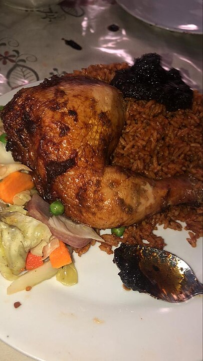

Grilled Chicken Adobo
This is a very tasty and easy-to-make Filipino chicken dish made with soy sauce, garlic, and vinegar.
I can just as easily double or triple the chicken in this recipe to serve guests at a party.
Serve over rice with just a little of the sauce (not too much).

Ingredients
1 ½ cups soy sauce
1 ½ cups water
¾ cup vinegar
3 tablespoons honey
1 ½ tablespoons minced garlic
3 bay leaves
½ teaspoon black pepper
3 pounds skinless, boneless chicken thighs
Directions
step 1
Preheat an outdoor grill for high heat, and lightly oil grate.
step 2
In a large pot, mix soy sauce, water, vinegar, honey, garlic, bay leaves, and pepper.
Bring the mixture to a boil, and place the chicken into the pot. Reduce heat, cover, and cook 35 to 40 minutes.
step 3
Remove chicken, drain on paper towels, and set aside. Discard bay leaves.
Return the mixture to a boil, and cook until reduced to about 1 1/2 cups.
step 4
Place chicken on the prepared grill, about 5 minutes on each side, until browned and crisp.
Serve with the remaining soy sauce mixture.